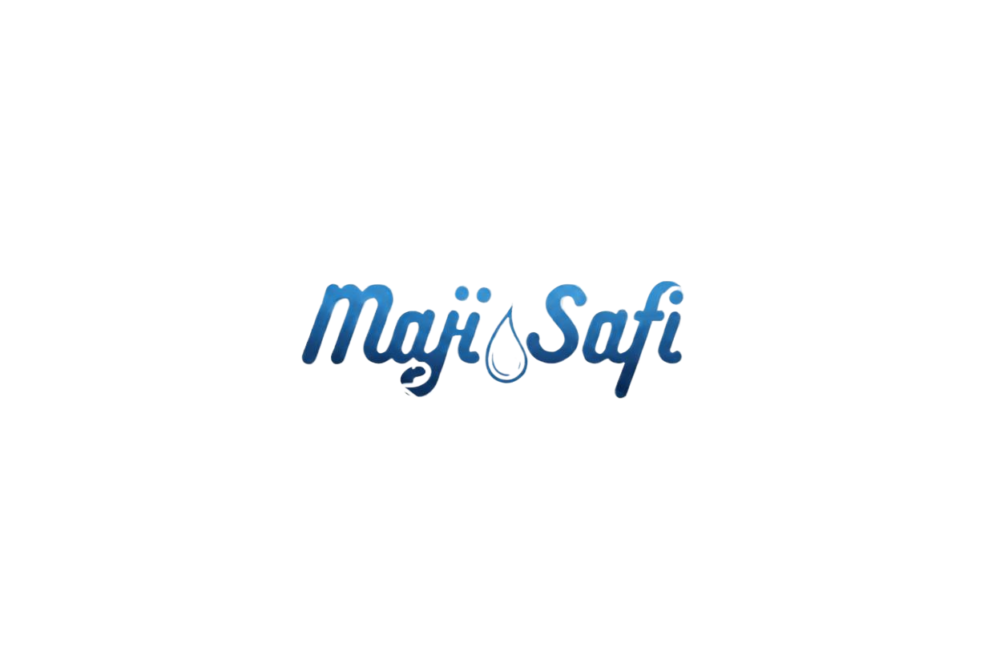

Partnership proposal
Draft for discussion
Draft for discussion
Prepared by Maji Safi
Safiflow Ventures Group Ltd
Kampala, Uganda
Safiflow Ventures Group Ltd
Kampala, Uganda


Belize · spring water
A Belize spring,
made into water
people trust
One way to approach the project: the market, the opportunity, and a first step that partners can agree on together.
October 2026Confidential · for Mike and partners